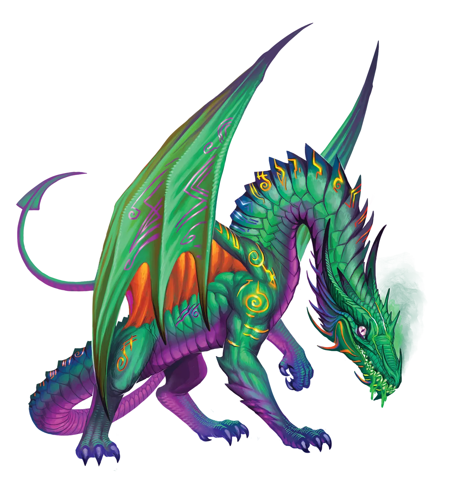
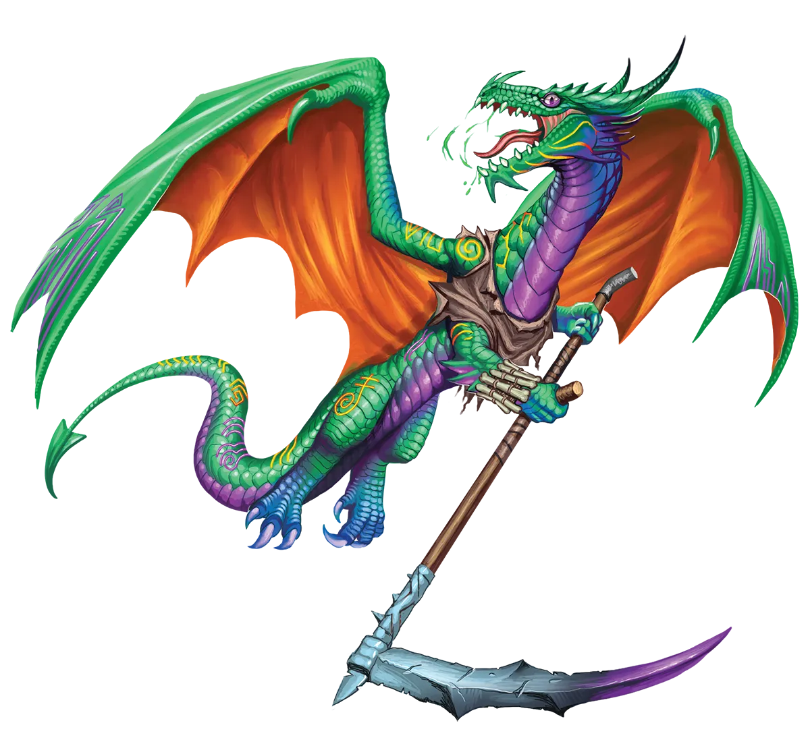

愚者智慧
哈莱奎因龙扮演愚者，但它们自认是全场最聪明的人。当然，事实并非如此，但它们确实设法获得了一些迷人的洞悉。然而，它们不会直接揭示自己的发现，而是通过幽默来误导。这使它们的观点变得隐晦，让别人更难理解哈莱奎因龙想说什么。听起来像是愚人的差事，对吧？但这自有其意义。哈莱奎因龙试图通过幽默揭示一个人的缺点。但关于我们的缺点，有一件有趣的事：人们不喜欢听到挑战自己根深蒂固信念的东西。一旦听到，我们往往会更加固执己见。通过让我们自己去寻找答案，哈莱奎因龙使我们变得更容易接受。
丑角龙 Harlequin Dragon |
|
|
哈莱奎因龙热衷于尖刻的玩笑和恶作剧，但这些最终能揭示更深层的真相，以及对他人更深刻的理解，远超人们对一个轻快恶作剧者的预期。与所有荒野龙类一样，它们也可能进行极光仪式，但它们是其中最不情愿的一群。传统派哈莱奎因龙随时间推移缓慢增长力量与洞悉，在缪斯降临之际行智者之愚行，它们至今仍占哈莱奎因龙的绝对多数。即便是传统派哈莱奎因龙，也会使用物品作为道具或获取其效益，有时也会穿上愚人的彩衣、戏服或其他装束。这很适合永恒哈莱奎因龙，它们不仅能借机将自己的观察和妙语带到世界各地，在极限中考验洞悉以迅速变强，还能对所有人再耍一个把戏。毕竟，既然大多数哈莱奎因龙都是传统派，一只永恒哈莱奎因龙若保持装备与传统派相似，便可以选择隐藏自己的真实力量。通过明确选择停留为相对较小的体型，旁人一眼瞥见这只已将其魔法潜力开发到极致的哈莱奎因龙时，可能会以为它不过是个幼崽，而事实上，这头龙的真实力量足以媲美古老的荒野龙类。这种让他人低估哈莱奎因龙、最终追悔莫及的惊喜，令它们愉悦而开怀。因为这场把戏需要两种龙类共同出演，永恒哈莱奎因龙格外喜爱传统派哈莱奎因龙。它们希望传统派同胞能继续保持显著多数，以免坏了兴致。永恒哈莱奎因龙的滑稽行为令传统派开怀，它们认为这是以嘲讽与机智启迪他人的目标之真实表达。毕竟，永光龙传授的教训是：不要以貌取人。 永恒哈莱奎因龙无法想象自己以其他方式冒险，除非与一群冒险者同行。总得有人欣赏它们的恶作剧、把戏、玩笑和史诗级毒舌，而它们的敌人可不太可能撑到那种需要时间与沉思才能达到的深层欣赏境界。有些队伍过于刻板、严肃和自命不凡，无法自我反躬自省，无法意识到哈莱奎因龙的喜剧演出蕴含着能助人成长的深意，于是便与它格格不入。不过，大多数队伍至少有一名成员能领会哈莱奎因龙的用意；在最坏的情况下，他们希望能说服其他人一起配合。然而，哈莱奎因龙梦寐以求的队伍，其成员大都拥有绝佳的幽默感，在被打落几根羽毛时也能优雅地一起大笑，并有智慧借机从哈莱奎因龙向他们展示的内心之镜中洞悉自我。哈莱奎因龙倾向于选择吟游诗人、术士、魔契师以及其他专精于喜剧与深意的职业。 愚者智慧 哈莱奎因龙扮演愚者，但它们自认是全场最聪明的人。当然，事实并非如此，但它们确实设法获得了一些迷人的洞悉。然而，它们不会直接揭示自己的发现，而是通过幽默来误导。这使它们的观点变得隐晦，让别人更难理解哈莱奎因龙想说什么。听起来像是愚人的差事，对吧？但这自有其意义。哈莱奎因龙试图通过幽默揭示一个人的缺点。但关于我们的缺点，有一件有趣的事：人们不喜欢听到挑战自己根深蒂固信念的东西。一旦听到，我们往往会更加固执己见。通过让我们自己去寻找答案，哈莱奎因龙使我们变得更容易接受。 丑角龙特质 Harlequin Dragon Traits 你出身于一脉机敏睿智、擅长借戏谑揭示真相的丑角龙世系。 |
  |